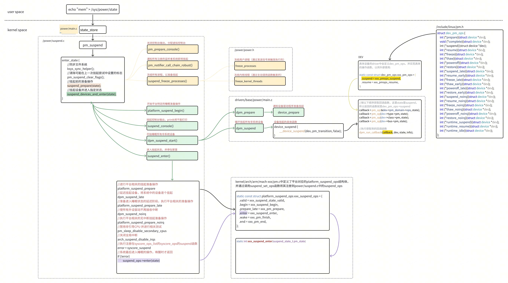

参考
https://www.cnblogs.com/LoyenWang/p/11372679.html https://blog.csdn.net/weixin_41028159/article/details/131012793#:~:text=调用 https://blog.csdn.net/qq_48458789/article/details/136333955
一、总览图 
🧊 冻结进程 (Freeze Tasks) 目的 ：防止在后续设备挂起过程中，用户空间进程通过直接内存访问或 I/O 寄存器访问硬件，从而引发不可预知的问题
🔌 挂起设备 (Suspend Devices)
四个阶段 ：设备的挂起分 prepare、suspend、late suspend 和 noirq suspend 四个阶段进行IRQ 处理 ：
⚙️ 关闭非启动 CPU
🌙 进入低功耗状态
Suspend-to-Idle ：所有 CPU 进入空闲循环，并“冻结”自己的调度器时钟，停止高精度定时器。系统只能被非定时器硬件中断（如唤醒设备）唤醒。
Suspend-to-RAM (STR)：在完成上述所有步骤后，内核会调用平台相关的挂起操作（platform_suspend_ops）。平台驱动会执行最后的硬件操作。（例如在 ACPI 系统上，内核会将控制权交给平台固件（BIOS），由固件将内存置于自刷新模式，并关闭大部分系统组件。）
二、基础概念 电源管理分层：
1 2 3 4 5 6 7 应用/策略层 用户态策略、Power HAL、wakelock / autosuspend 策略 ↓ 内核框架层 CPUIdle / CPUFreq / DevFreq / Runtime PM / genpd / PM QoS / Thermal / System Sleep ↓ 固件接口层 PSCI（SMC → EL3/ATF） SCMI（mailbox → SCP） ↓ 硬件 CPU/Cluster、电源域、时钟与 Regulator（PMIC）、SCP 微控制器
框架层负责决定“何时进低功耗”，固件层负责“怎么真正开关电源”，设备驱动只填回调。
2.1 启动 CPU 和非启动CPU 启动CPU ：在多核系统中，系统上电启动时，并不是所有 CPU 核心同时开始工作。硬件或固件会先指定一个 CPU 核心来执行最初的引导代码，这个核心就是启动 CPU（通常是 CPU0）。非启动 CPU ：所有被启动 CPU 唤醒并加入系统的其他核心的CPU
2.2 cpuidle 当调度器发现某个 CPU 上没有可运行的任务时，它会进入 idle 线程。cpuidle 框架负责在这个时机让 CPU 进入一个合适的低功耗状态（C-state），常见状态有：
1 2 3 4 5 C0：正常运行状态，CPU 完全活跃。 C1：停止时钟，但保持所有状态。唤醒极快。 C2：停止时钟，可能关闭部分缓存或总线。 C3：关闭 L1/L2 缓存，更深度的省电 更深状态：如 C6、C7 等，会关闭更多核心内部组件，甚至把核心电压降到接近 0，但唤醒延迟也更大。
与 Suspend-to-Idle 的区别
cpuidle：它只影响某个 CPU，不改变系统的可调度性，进程还在，设备还开着，随时可以被中断叫醒。
Suspend-to-Idle 是系统级休眠的一种。它要先冻结所有用户进程、挂起所有设备、停止时间统计，然后才让 CPU 进入 idle。整个系统处于“睡眠”状态，不是某个核在打盹。
2.3 cpufreq Linux 内核中负责动态调整 CPU 运行频率和电压的子系统。
负载高时，提高频率，让任务跑得更快；
负载低时，降低频率和电压，节省功耗
这个技术也叫 DVFS（Dynamic Voltage and Frequency Scaling），动态电压频率调整。
cpufreq 的组成：
cpufreq driver ：平台/硬件相关的驱动，负责真正去写寄存器改频率。比如 intel_pstate、acpi-cpufreq、arm_big_little 等。
cpufreq governor （调频策略）：决定“什么时候该升频、什么时候该降频”。常见的有：
1 2 3 4 5 performance：一直跑最高频。 powersave：一直跑最低频。 ondemand：负载超过阈值就升频。 conservative：比 ondemand 更平缓地升降频。 schedutil：⭐ 现代内核默认，直接结合调度器的负载信息来调频，响应更精准。
sysfs 接口 ：用户层可以通过 /sys/devices/system/cpu/cpuX/cpufreq/ 查看和设置频率、策略等
2.4 DVFS 调节过程:
第一步：决策 —— Governor判断该用多快 频率, 电压 ) 的组合。不同的 Governor 有不同的判断逻辑。第二步：执行 —— 驱动来操作硬件 cpufreq 驱动 去执行这个切换。驱动的执行遵循严格的安全顺序，核心原则是：升频先升压，降频先降频 ，具体操作如下：
改频率 ：驱动通过修改 CPU 内部的 PLL 的倍频参数，来改变输出给 CPU 的时钟频率。调电压 ：驱动通过 I2C 等总线向电源管理芯片（PMIC）发送指令，让电压调节器输出目标电压。
2.5 Runtime PM 与上方的cpu电源管理不同，Runtime PM 针对的是外设的运行时电源管理。
核心思想 ：引用计数与自动挂起
当驱动需要操作设备时，调用 pm_runtime_get()，计数加一，设备保持活跃（active）。
用完后调用 pm_runtime_put()，计数减一。
当计数降到零，且没有活跃的子设备时，PM 核心就会触发 idle 回调，挂起设备。（当一个驱动没有定义idle回调时，PM 核心或子系统会用一个通用的默认实现来代替）
2.6 电源域（Generic Power Domain，genpd） 做什么 ：把共享同一路电源开关的一组 IP 统一管理，只有域内最后一个设备进入 suspend，整个域才真正断电 。
结构
域可级联：parent domain / subdomain，父域下电前先确保子域都已下电
设备通过设备树 power-domains 属性挂到某个域
provider 端实现 power_on / power_off 回调，真正执行时往往再往下调到 PSCI 或 SCMI
与性能联动
genpd performance state 会联动 OPP：让 domain 知道当前该供多少电压，避免“只能按最高压供电”
查看 ：cat /sys/kernel/debug/pm_genpd/pm_genpd_summary
2.7 Clock 与 Regulator 框架 Clock 框架
统一管理 SoC 时钟树，clk_prepare_enable() / clk_disable_unprepare()
绝大多数“某模块省电”最终就是关掉它的时钟门控（gate）
Regulator 框架
管理 PMIC 出来的各路电源轨：regulator_enable/disable、get_voltage/set_voltage
约束（电压范围、允许的 mode）写死在设备树的 regulator 节点
二者与上层的关系 （执行层的最后一公里）
genpd / Runtime PM 的回调内部，最终调用的就是关时钟 + 断 regulator
顺序：停设备 → 关 clock → 断 regulator；上电时严格反序
2.8 PM QoS（延迟/性能约束） 做什么 ：允许子系统声明“我不能忍受什么” —— CPU DMA 延迟上限、频率下限/上限、内存带宽下限。
常见用法
PM_QOS_CPU_DMA_LATENCY：约束 cpuidle 不能进太深的 state（音频、USB 传输等场景）cpufreq 的 min / max 频率约束
影响
governor 决策时把 QoS 作为硬性边界
“明明该进深 idle 却没进”往往是有人在持 QoS
入口 ：/dev/cpu_dma_latency（用户态）
2.9 温升策略（thermal） 三要素
thermal_zone ：一个温度传感器区域 + 若干 trip point（触发阈值）cooling_device ：降温手段 —— cpufreq cooling（限 CPU 最高频）、devfreq cooling（限 GPU 等）、fan、严重的用 hotplug cooling 直接拔核governor ：降温策略
trip point 分级
1 2 3 4 active → 主动散热（开风扇） passive → 降频 hot → 通知用户态 critical → 强制关机
governor
step_wise：一档一档加 / 退措施power_allocator / IPA：按 PID 控制器 + power model 动态分配功耗预算，现代 SoC 常用
与 SCMI 的连接 ：SoC 温度通常就是 SCP 通过 SCMI Sensor 协议上报的
查看 ：cat /sys/class/thermal/thermal_zone*/{temp,type,policy}、/sys/class/thermal/cooling_device*/cur_state
2.10 功耗优化（落地清单） 原则：先测再改 —— 没有基线数据，一切优化都是猜
手段：功耗分析仪 / 电流表、powertop、turbostat、power 相关 trace event、厂商工具
按收益从大到小
待机 ：查 wakeup_sources 找耗电大户，治理无故的 timer / GPIO / 网络唤醒Runtime PM 全覆盖 ：不用的设备一律 autosuspend，配合 genpd 才能真正断电时钟与电源轨 ：关掉不用模块的时钟和电源轨，避免 IP 漏电Idle ：开 CONFIG_NO_HZ（tickless），减少轮询、合并短周期定时器DVFS ：用 schedutil + 合理 OPP，避免“最高频跑轻量任务”外设 ：DDR 自刷新/低频、屏幕刷新率与背光、sensor 批量上报与中断合并温升 ：调 thermal governor 与 cdev 权重，避免过早降频影响体验
常见坑
某个外设没关导致漏电
QoS 被长期持有导致进不了深 idle
调试日志 / 串口输出占着时钟
suspend 成功率低导致反复重试
2.11 调试接口速查 1 2 3 4 5 6 7 8 9 10 11 12 13 14 15 16 17 18 19 20 cpupower idle-info cpupower frequency-info cat /sys/devices/system/cpu/cpu0/cpuidle/state*/{name,latency,residency,usage,time }cat /sys/devices/system/cpu/cpu*/cpufreq/{scaling_governor,scaling_cur_freq}cat /sys/devices/.../power/{control,runtime_status,runtime_usage,runtime_active_time}cat /sys/kernel/debug/pm_genpd/pm_genpd_summarycat /sys/kernel/debug/wakeup_sourcescat /sys/kernel/debug/suspend_statsecho 1 > /sys/power/pm_print_times cat /sys/class/thermal/thermal_zone*/tempcat /sys/class/thermal/thermal_zone*/type
三、suspend/resume 回调里通常做什么 驱动要接入系统休眠，就是填 struct dev_pm_ops，先明确几个回调的执行顺序：
1 2 suspend 方向：prepare → suspend → suspend_late → suspend_noirq → [CPU 睡下去]resume 方向：[CPU 醒来] → resume_noirq → resume_early → resume → complete
各阶段的约束不同，决定了事情该放在哪个回调里做：
prepare / suspend / complete：进程上下文，可以睡眠 ，可以拿 mutex，可以正常用 i2c/spi 写寄存器 —— 绝大多数工作都在这里做suspend_late / resume_early：过渡阶段，中断逐步收敛suspend_noirq / resume_noirq：中断已经关闭 ，绝对不能睡眠，不能用 mutex，不能做可能睡眠的分配，只能自旋锁 + 少量寄存器读写
3.1 suspend 回调内容
先判断设备是否已经 runtime suspend ：避免对已经下电的设备重复操作1 2 if (pm_runtime_suspended (dev)) return 0 ;
停掉所有异步活动 ：DMA、工作队列、定时器、delayed work 只要还有一个在跑，设备就进不了低功耗，或者进去后立刻被唤醒1 2 3 4 5 6 mutex_lock (&priv->lock);priv->suspended = true ; mutex_unlock (&priv->lock);cancel_work_sync (&priv->work);del_timer_sync (&priv->timer);foo_stop_dma (priv);
屏蔽设备中断并清 pending ：先关设备侧的中断使能，再清状态寄存器；否则挂起过程中一个残留中断就把系统唤醒了保存断电/复位后会丢失的上下文 ：寄存器组、DMA 描述符、配置值，保存到驱动的私有结构里让硬件进低功耗 ：写寄存器把芯片切到 sleep/standby 模式、关 PHY、拉低功耗脚等再关时钟、下电 ：顺序必须是先停设备、后进低功耗、最后断供1 2 3 foo_write (priv, FOO_POWER, FOO_POWER_DOWN);clk_disable_unprepare (priv->clk);regulator_disable (priv->vdd);
需要作为唤醒源时留一条路 1 2 if (device_may_wakeup (dev)) enable_irq_wake (priv->irq);
3.2 resume 回调内容 严格按 suspend 的反序 执行，这是电源管理的铁律：
先供电、开时钟 1 2 regulator_enable (priv->vdd);clk_prepare_enable (priv->clk);
恢复上下文 / 重新初始化硬件 ：写回保存的寄存器。很多平台掉过电或复位过硬件，这时不能假设硬件状态还在，要按“冷启动”处理，必要时重新下载固件1 2 3 foo_write (priv, FOO_CTRL, priv->saved_ctrl);foo_write (priv, FOO_POWER, FOO_POWER_UP);foo_load_firmware (priv);
处理中断 ：顺序与 suspend 相反，先清状态再使能 ，否则一开中断就是 IRQ 风暴1 2 3 4 5 foo_write (priv, FOO_INT_STA, 0xff ); foo_write (priv, FOO_INT_EN, priv->int_en);enable_irq (priv->irq);if (device_may_wakeup (dev)) disable_irq_wake (priv->irq);
重启数据流 ：重新配置 DMA、恢复缓冲区/队列、重启定时器，并把软件侧配置重新下发给硬件（如 IIO 采样率、V4L2 格式）恢复软件状态 ：清 suspended 标志，让正常数据路径重新可用若设备真的掉过电 ：还要重做校准、重新枚举下游设备、恢复内部状态机
四、问题排查 4.1 suspend问题排查：
先分类现象
根本无法进入 suspend
进入后立刻被唤醒
卡在 suspend 过程中
resume 卡死/黑屏/外设失效
suspend/resume 耗时异常
检查日志和状态
看dmesg
cat /proc/interrupts
检查wakeup_sources
用 pm_test 分层定位1 2 echo devices > /sys/power/pm_test echo mem > /sys/power/state
查唤醒源/阻止源1 2 cat /sys/devices/.../power/wakeup echo disabled > /sys/devices/.../power/wakeup
常见根因
未正确屏蔽中断
未清中断标志
未停止 DMA/工作队列/定时器
4.2 resume问题排查
问题分类：
无法唤醒，卡在睡眠状态
唤醒后无功能
唤醒耗时异常
检查日志和状态
1 2 3 4 dmesg cat /proc/interrupts cat /sys/kernel/debug/wakeup_sources cat /sys/kernel/debug/suspend_stats
pm_test 分层定位
查唤醒源/阻止源
1 2 cat /sys/devices/.../power/wakeup echo disabled > /sys/devices/.../power/wakeup
常见原因
中断/唤醒源问题
resume 时没有重新使能中断，设备无法工作
设备依赖顺序错误
父设备未恢复，子设备先恢复
寄存器读写超时
resume 时未重新配置硬件状态或配置错误
五、Suspend具体流程 用户空间执行如下操作，会通过sysfs触发suspend的执行：
1 2 3 echo "freeze" > /sys/power/state echo "standby" > /sys/power/state echo "mem" > /sys/power/state
相应的处理代码在 /kernel/power/main.c 中：
1 2 3 4 5 6 7 8 9 10 11 12 13 14 15 16 17 18 19 20 21 22 23 24 25 26 27 28 29 30 31 static ssize_t state_store (struct kobject *kobj, struct kobj_attribute *attr, const char *buf, size_t n) { suspend_state_t state; int error; error = pm_autosleep_lock (); if (error) return error; if (pm_autosleep_state () > PM_SUSPEND_ON) { error = -EBUSY; goto out; } state = decode_state (buf, n); if (state < PM_SUSPEND_MAX) { if (state == PM_SUSPEND_MEM) state = mem_sleep_current; error = pm_suspend (state); } else if (state == PM_SUSPEND_MAX) { error = hibernate (); } else { error = -EINVAL; } out: pm_autosleep_unlock (); return error ? error : n; }
power/suspend.c
1 2 3 4 5 6 7 8 9 10 11 12 13 14 15 16 17 18 19 20 21 22 23 24 25 26 27 28 29 30 31 32 33 34 35 36 37 38 39 40 41 42 43 44 45 46 47 48 49 50 51 52 53 54 55 56 57 58 59 60 61 62 63 64 65 66 67 68 69 70 71 72 73 74 75 76 77 78 int pm_suspend (suspend_state_t state) { int error; if (state <= PM_SUSPEND_ON || state >= PM_SUSPEND_MAX) return -EINVAL; pr_info ("suspend entry (%s)\n" , mem_sleep_labels[state]); error = enter_state (state); if (error) { suspend_stats.fail++; dpm_save_failed_errno (error); } else { suspend_stats.success++; ktime_get_ts64 (&suspend_stats.last_success_resume_time); } pr_info ("suspend exit\n" ); return error; } static int enter_state (suspend_state_t state) { int error; trace_suspend_resume (TPS ("suspend_enter" ), state, true ); if (state == PM_SUSPEND_TO_IDLE) { #ifdef CONFIG_PM_DEBUG if (pm_test_level != TEST_NONE && pm_test_level <= TEST_CPUS) { pr_warn ("Unsupported test mode for suspend to idle, please choose none/freezer/devices/platform.\n" ); return -EAGAIN; } #endif } else if (!valid_state (state)) { return -EINVAL; } if (!mutex_trylock (&system_transition_mutex)) return -EBUSY; if (state == PM_SUSPEND_TO_IDLE) s2idle_begin (); if (sync_on_suspend_enabled) { trace_suspend_resume (TPS ("sync_filesystems" ), 0 , true ); ksys_sync_helper (); trace_suspend_resume (TPS ("sync_filesystems" ), 0 , false ); } pm_pr_dbg ("Preparing system for sleep (%s)\n" , mem_sleep_labels[state]); pm_suspend_clear_flags (); error = suspend_prepare (state); if (error) goto Unlock; if (suspend_test (TEST_FREEZER)) goto Finish; trace_suspend_resume (TPS ("suspend_enter" ), state, false ); pm_pr_dbg ("Suspending system (%s)\n" , mem_sleep_labels[state]); pm_restrict_gfp_mask (); error = suspend_devices_and_enter (state); pm_restore_gfp_mask (); Finish: events_check_enabled = false ; pm_pr_dbg ("Finishing wakeup.\n" ); suspend_finish (); Unlock: mutex_unlock (&system_transition_mutex); return error; }
进入到suspend_prepare()中以后，它会给suspend分配一个虚拟终端来输出信息，然后广播一个系统要进入suspend的Notify，关闭掉用户态的helper进程，然后依次调用suspend_freeze_processes()冻结所有的进程，这里会保存所有进程当前的状态，也许有一些进程会拒绝进入冻结状态，当有这样的进程存在的时候， 会导致冻结失败，此函数就会放弃冻结进程，并且解冻刚才冻结的所有进程。
1 2 3 4 5 6 7 8 9 10 11 12 13 14 15 16 17 18 19 20 21 22 23 24 25 26 27 28 29 30 31 32 33 34 35 36 37 38 39 40 41 42 43 44 45 46 47 48 49 50 51 52 53 static int suspend_prepare (suspend_state_t state) { int error; if (!sleep_state_supported (state)) return -EPERM; pm_prepare_console (); error = pm_notifier_call_chain_robust (PM_SUSPEND_PREPARE, PM_POST_SUSPEND); if (error) goto Restore; trace_suspend_resume (TPS ("freeze_processes" ), 0 , true ); error = suspend_freeze_processes (); trace_suspend_resume (TPS ("freeze_processes" ), 0 , false ); if (!error) return 0 ; log_suspend_abort_reason ("One or more tasks refusing to freeze" ); suspend_stats.failed_freeze++; dpm_save_failed_step (SUSPEND_FREEZE); pm_notifier_call_chain (PM_POST_SUSPEND); Restore: pm_restore_console (); return error; } static inline int suspend_freeze_processes (void ) { int error; error = freeze_processes (); if (error) return error; error = freeze_kernel_threads (); if (error) thaw_processes (); return error; }
此时开始休眠所有外设，当所有的设备休眠以后， suspend_ops->prepare()会被调用， 这个函数通常会作一些准备工作来让设备进入休眠。
接下来多核CPU中的非启动CPU会被关掉，通过注释看到是避免这些其他的CPU造成race condio，接下来的以后只有一个CPU在运行了。
接下来suspend_enter()会被调用， 这个函数会关闭arch irq， 调用 device_power_down()， 它会调用suspend_late()函数， 这个函数是系统真正进入休眠最后调用的函数，通常会在这个函数中做最后的检查，如果检查没问题， 接下来休眠所有的系统设备和总线，并且调用 suspend_pos->enter() 来使CPU进入省电状态，这时就已经休眠了，代码的执行也就停在这里了。
1 2 3 4 5 6 7 8 9 10 11 12 13 14 15 16 17 18 19 20 21 22 23 24 25 26 27 28 29 30 31 32 33 34 35 36 37 38 39 40 41 42 43 44 45 46 47 48 49 50 51 52 53 54 55 56 57 58 59 60 61 62 63 64 65 66 67 68 69 70 71 72 73 74 75 76 77 78 79 80 81 82 83 84 85 86 87 88 89 90 91 92 93 94 95 96 97 98 99 100 101 102 103 104 105 106 107 108 109 110 111 112 113 114 115 116 117 118 119 120 121 122 123 124 125 126 127 128 129 130 131 132 133 134 135 136 137 138 139 140 141 142 143 144 145 146 147 148 149 150 151 152 153 154 155 156 157 158 159 160 161 162 163 164 165 166 167 168 169 170 171 172 173 174 175 176 177 178 179 180 181 182 183 184 185 186 187 188 189 190 191 int suspend_devices_and_enter (suspend_state_t state) { int error; bool wakeup = false ; if (!sleep_state_supported (state)) return -ENOSYS; pm_suspend_target_state = state; if (state == PM_SUSPEND_TO_IDLE) pm_set_suspend_no_platform (); error = platform_suspend_begin (state); if (error) goto Close; suspend_console (); suspend_test_start (); error = dpm_suspend_start (PMSG_SUSPEND); if (error) { pr_err ("Some devices failed to suspend, or early wake event detected\n" ); log_suspend_abort_reason ( "Some devices failed to suspend, or early wake event detected" ); goto Recover_platform; } suspend_test_finish ("suspend devices" ); if (suspend_test (TEST_DEVICES)) goto Recover_platform; do { error = suspend_enter (state, &wakeup); } while (!error && !wakeup && platform_suspend_again (state)); Resume_devices: suspend_test_start (); dpm_resume_end (PMSG_RESUME); suspend_test_finish ("resume devices" ); trace_suspend_resume (TPS ("resume_console" ), state, true ); resume_console (); trace_suspend_resume (TPS ("resume_console" ), state, false ); Close: platform_resume_end (state); pm_suspend_target_state = PM_SUSPEND_ON; return error; Recover_platform: platform_recover (state); goto Resume_devices; } int dpm_suspend_start (pm_message_t state) { ktime_t starttime = ktime_get (); int error; error = dpm_prepare (state); if (error) { suspend_stats.failed_prepare++; dpm_save_failed_step (SUSPEND_PREPARE); } else error = dpm_suspend (state); dpm_show_time (starttime, state, error, "start" ); return error; } int dpm_prepare (pm_message_t state) { int error = 0 ; trace_suspend_resume (TPS ("dpm_prepare" ), state.event, true ); might_sleep (); wait_for_device_probe (); device_block_probing (); mutex_lock (&dpm_list_mtx); while (!list_empty (&dpm_list) && !error) { struct device *dev =to_device (dpm_list.next); get_device (dev); mutex_unlock (&dpm_list_mtx); trace_device_pm_callback_start (dev, "" , state.event); error = device_prepare (dev, state); trace_device_pm_callback_end (dev, error); mutex_lock (&dpm_list_mtx); if (!error) { dev->power.is_prepared = true ; if (!list_empty (&dev->power.entry)) list_move_tail (&dev->power.entry, &dpm_prepared_list); } else if (error == -EAGAIN) { error = 0 ; } else { dev_info (dev, "not prepared for power transition: code %d\n" , error); log_suspend_abort_reason ("Device %s not prepared for power transition: code %d" , dev_name (dev), error); } mutex_unlock (&dpm_list_mtx); put_device (dev); mutex_lock (&dpm_list_mtx); } mutex_unlock (&dpm_list_mtx); trace_suspend_resume (TPS ("dpm_prepare" ), state.event, false ); return error; } int dpm_suspend (pm_message_t state) { ktime_t starttime = ktime_get (); int error = 0 ; trace_suspend_resume (TPS ("dpm_suspend" ), state.event, true ); might_sleep (); devfreq_suspend (); cpufreq_suspend (); mutex_lock (&dpm_list_mtx); pm_transition = state; async_error = 0 ; while (!list_empty (&dpm_prepared_list)) { struct device *dev =to_device (dpm_prepared_list.prev); get_device (dev); mutex_unlock (&dpm_list_mtx); error = device_suspend (dev); mutex_lock (&dpm_list_mtx); if (error) { pm_dev_err (dev, state, "" , error); dpm_save_failed_dev (dev_name (dev)); } else if (!list_empty (&dev->power.entry)) { list_move (&dev->power.entry, &dpm_suspended_list); } mutex_unlock (&dpm_list_mtx); put_device (dev); mutex_lock (&dpm_list_mtx); if (error || async_error) break ; } mutex_unlock (&dpm_list_mtx); async_synchronize_full (); if (!error) error = async_error; if (error) { suspend_stats.failed_suspend++; dpm_save_failed_step (SUSPEND_SUSPEND); } dpm_show_time (starttime, state, error, NULL ); trace_suspend_resume (TPS ("dpm_suspend" ), state.event, false ); return error; }
1 2 3 4 5 6 7 8 9 10 11 12 13 14 15 16 17 18 19 20 21 22 23 24 25 26 27 28 29 30 31 32 33 34 35 36 37 38 39 40 41 42 43 44 45 46 47 48 49 50 51 52 53 54 55 56 57 58 59 60 61 62 63 64 65 66 67 68 69 70 71 72 73 74 75 76 77 78 79 80 81 82 83 84 85 86 87 88 89 90 91 92 93 94 95 96 97 98 99 100 101 102 103 104 105 106 107 static int suspend_enter (suspend_state_t state, bool *wakeup) { int error, last_dev; error = platform_suspend_prepare (state); if (error) goto Platform_finish; error = dpm_suspend_late (PMSG_SUSPEND); if (error) { last_dev = suspend_stats.last_failed_dev + REC_FAILED_NUM - 1 ; last_dev %= REC_FAILED_NUM; pr_err ("late suspend of devices failed\n" ); log_suspend_abort_reason ("late suspend of %s device failed" , suspend_stats.failed_devs[last_dev]); goto Platform_finish; } error = platform_suspend_prepare_late (state); if (error) goto Devices_early_resume; error = dpm_suspend_noirq (PMSG_SUSPEND); if (error) { last_dev = suspend_stats.last_failed_dev + REC_FAILED_NUM - 1 ; last_dev %= REC_FAILED_NUM; pr_err ("noirq suspend of devices failed\n" ); log_suspend_abort_reason ("noirq suspend of %s device failed" , suspend_stats.failed_devs[last_dev]); goto Platform_early_resume; } error = platform_suspend_prepare_noirq (state); if (error) goto Platform_wake; if (suspend_test (TEST_PLATFORM)) goto Platform_wake; if (state == PM_SUSPEND_TO_IDLE) { s2idle_loop (); goto Platform_wake; } error = pm_sleep_disable_secondary_cpus (); if (error || suspend_test (TEST_CPUS)) { log_suspend_abort_reason ("Disabling non-boot cpus failed" ); goto Enable_cpus; } arch_suspend_disable_irqs (); BUG_ON (!irqs_disabled ()); system_state = SYSTEM_SUSPEND; error = syscore_suspend (); if (!error) { *wakeup = pm_wakeup_pending (); if (!(suspend_test (TEST_CORE) || *wakeup)) { trace_suspend_resume (TPS ("machine_suspend" ), state, true ); error = suspend_ops->enter (state); trace_suspend_resume (TPS ("machine_suspend" ), state, false ); } else if (*wakeup) { error = -EBUSY; } syscore_resume (); } system_state = SYSTEM_RUNNING; arch_suspend_enable_irqs (); BUG_ON (irqs_disabled ()); Enable_cpus: pm_sleep_enable_secondary_cpus (); Platform_wake: platform_resume_noirq (state); dpm_resume_noirq (PMSG_RESUME); Platform_early_resume: platform_resume_early (state); Devices_early_resume: dpm_resume_early (PMSG_RESUME); Platform_finish: platform_resume_finish (state); return error; }
六、案例 6.1 系统时间戳回退导致suspend刚开始就被唤醒 RTC在bios阶段初始化异常，导致后续suspend失败
6.2